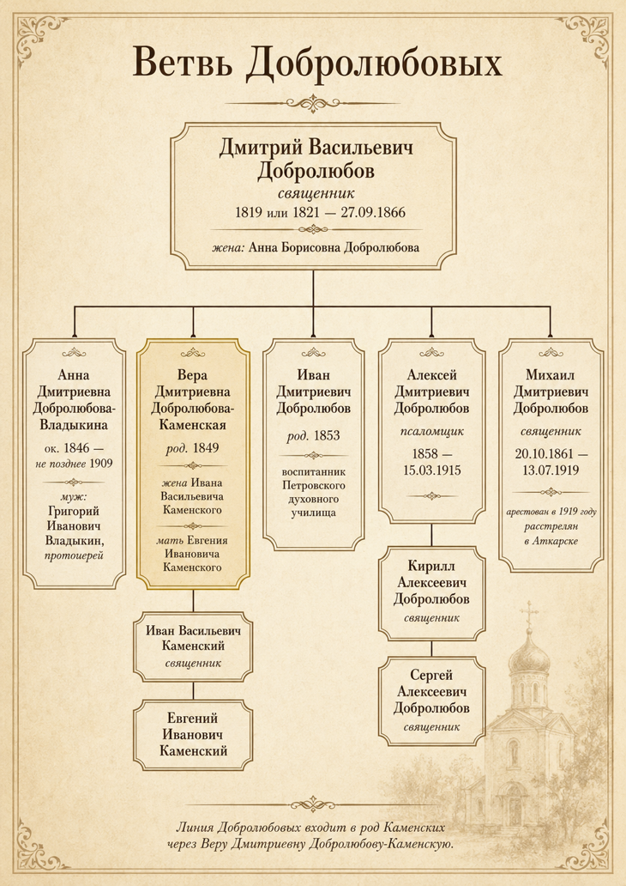

Глава V
Добролюбовы: линия Веры Дмитриевны
Линия Добролюбовых входит в мою родословную через Веру Дмитриевну Добролюбову-Каменскую — мою прапрабабушку, жену Ивана Васильевича Каменского и мать Евгения Ивановича. За ней стоит ещё одна духовная и образовательная линия Поволжья. Её отец, Дмитрий Васильевич Добролюбов, был священником, учился в Петровском духовном училище и Саратовской духовной семинарии. После его смерти в «Саратовских епархиальных ведомостях» было обозначено вакантное священническое место в селе Порзове — «за смертью священника Дмитрия Добролюбова». Эта строка связывает Добролюбовых с Порзовом, где служил Иван Васильевич Каменский и где родился Евгений Иванович.

По семейным сведениям есть осторожная версия, что более ранней фамилией этой линии могли быть Сердобцевы, а фамилия Добролюбовы появилась позднее. Возможно, она была связана с духовной средой и оценкой личных качеств человека. Пока это не факт, а направление будущего поиска.
Семья Владыкиных
Через Анну Дмитриевну Добролюбову семейная история связана с Владыкиными. Самой заметной фигурой этой линии был протоиерей Григорий Иванович Владыкин.

Протоиерей Григорий Иванович Владыкин.
Кавалер ордена Святого князя Владимира IV степени.
За многолетнее служение он был возведён в сан протоиерея епископом Палладием (Добронравовым) в Троицком кафедральном соборе Саратова.
Позднее он был награждён орденом Святого князя Владимира IV степени за пятидесятилетнюю отлично-усердную службу Церкви Божией.
Его биография показывает, что среди родственных семей Каменских церковное служение было не случайностью, а устойчивой средой.
Через Веру Дмитриевну Добролюбовы вошли в прямую линию Каменских. Другие дети Дмитрия Васильевича тоже оставались внутри духовной и образовательной среды: среди них были воспитанники духовных училищ, псаломщики, священники, жёны священнослужителей. Особенно трагична судьба её брата, Михаила Дмитриевича Добролюбова. Он был священником. В 1919 году его арестовали в селе Варапаевка Аткарского уезда по обвинению в «антисоветской агитации среди верующих». 9 июля 1919 года было вынесено решение о высшей мере наказания, и 13 июля Михаил Дмитриевич был расстрелян в Аткарске.
Так Добролюбовы входят в книгу сразу несколькими путями: через Веру Дмитриевну — как материнская линия Евгения Ивановича; через Дмитрия Васильевича — как связь с Порзовом и духовным образованием; через Михаила Дмитриевича — как свидетельство разрушения старого церковного мира. Рядом с Каменскими и Фисейскими это третья важная линия.